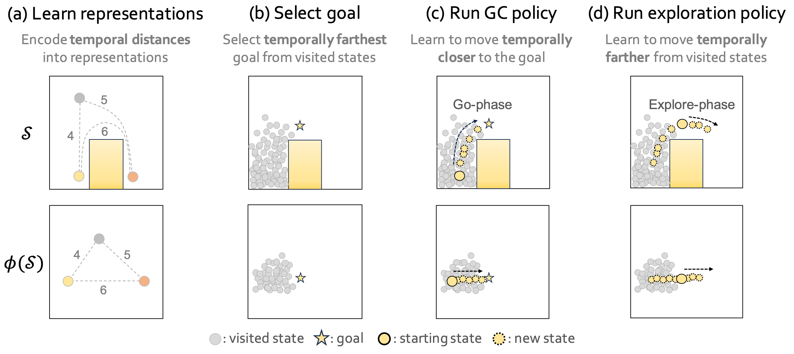

AntMaze-Large
AntMaze-Ultra
Humanoid-Run
Quadruped-Escape
Unsupervised goal-conditioned reinforcement learning (GCRL) is a promising paradigm for developing diverse robotic skills without external supervision. However, existing unsupervised GCRL methods often struggle to cover a wide range of states in complex environments due to their limited exploration and sparse or noisy rewards for GCRL. To overcome these challenges, we propose a novel unsupervised GCRL method that leverages TemporaL Distance-aware Representations (TLDR). With TLDR, our approach selects faraway goals to initiate exploration, and computes intrinsic exploration rewards and goal-reaching rewards. Specifically, our exploration policy seeks states with large temporal distances (i.e. covering a large state space), while the goal-conditioned policy learns to minimize the temporal distance to the goal (i.e. reaching the goal). Our experimental results in six simulated robotic locomotion environments demonstrate that our method significantly outperforms previous unsupervised GCRL methods in achieving a wide variety of states.
Unsupervised GCRL aims to learn a goal-conditioned policy capable of reaching diverse states without supervision.
There are two major challenges in unsupervised GCRL:
To address those challenges, we propose TLDR, a novel unsupervised GCRL algorithm that leverages TemporaL Distance-aware Representations to improve both goal-directed exploration and goal-conditioned policy learning. Specifically, our method utilizes temporal distance induced by temporal distance-aware representations for 1) selecting faraway goals to initiate exploration, 2) learning a goal-conditioned policy that minimizes temporal distance to a goal, and 3) learning an exploration policy that maximizes temporal distance. \(\def\s{\textbf{s}}\def\g{\mathbf{g}}\)
 Learning temporal distance-aware representations:
Selecting the goals: We select goals that are temporally distant from states that are already visited (i.e. in the replay buffer) to explore hard-to-reach states. In particular, we choose N goals with the top-N highest entropy, calculated by non-parametric particle-based entropy estimator with respect to our temporal distance-aware representation: $$ r_\text{TLDR}(\\s) = \log\left(1 + \frac{1}{k} \sum_{{\textbf{z}^{(j)}} \in N_k(\phi(\\s))} ||\phi(\\s) - \textbf{z}^{(j)}||\right), $$ where \(N_k(\cdot)\) denotes the \(k\)-nearest neighbors around \(\phi(\mathbf{s})\) within a single minibatch.
Learning goal-conditioned policy: The goal-conditioned policy aims to minimize the distance to the goal. In this work, we propose leveraging a task-agnostic metric, temporal distance, as the learning signal for the goal-conditioned policy, which can be easily calculated using temporal distance-aware representations: $$ r^G(\s, \s') = \lVert \phi(\s) - \phi(\g)\rVert - \lVert\phi(\s') - \phi(\g)\rVert. $$
Learning exploration policy: After the goal-conditioned policy navigates towards the chosen goal \(\g\), the exploration policy is executed to discover states even more distant from the visited states. This objective of the exploration policy can be simply defined as: $$ r^E(\s, \s') = r_\text{TLDR}(\s') - r_\text{TLDR}(\s). $$
We compare the trajectories with METRA, a state-of-the-art unsupervised RL method showing strong performances for downstream goal-reaching tasks in high-dimensional state spaces.
TLDR
METRA
TLDR can successfully reach all the goals, while METRA struggles with some of the goals in the maze.
TLDR
METRA
TLDR can successfully reach most of the goals, while METRA struggles with some of the goals in the maze.
TLDR
METRA
TLDR can reach diverse goals while demonstrating faster movements compared to METRA.
TLDR
METRA
TLDR can reach goals in more diverse directions compared to METRA.
TLDR
METRA
While training, TLDR explores more diverse regions of the maze.
TLDR
METRA
While training, TLDR explores more diverse regions of the maze.
TLDR
METRA
TLDR explores in more diverse directions, and also learns faster and far-reaching behaviors.
TLDR
METRA
TLDR explores in more diverse directions, and capable of exploring hard-to-reach states.
TLDR may learn unsafe behaviors without any regularization. However, by adding a safety reward \(r_{\text{safe}} = [0, 0, 1] \cdot \mathbf{v_{torso}}\), TLDR can learn effective goal-reaching behaviors while simultaneously maximizing safety.
@inproceedings{bae2024tldr,
author = {Junik Bae and Kwanyoung Park and Youngwoon Lee},
title = {TLDR: Unsupervised Goal-Conditioned RL via Temporal Distance-Aware Representations},
booktitle = {Conference on Robot Learning},
year = {2024},
}